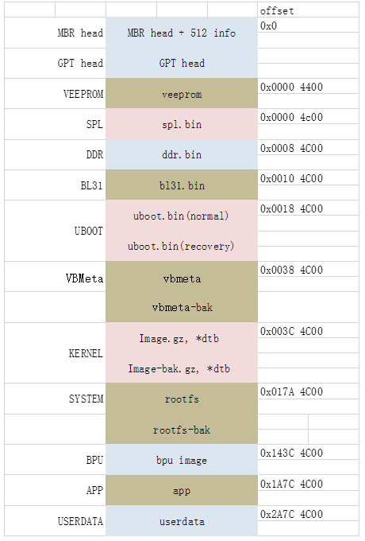
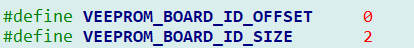

4.7. OTA实现原理和使用方法
本文描述了X3芯片中OTA系统软件详细设计，包括系统分区、OTA标志位、日志系统、OTA相关utility、warning信息约定、recovery系统、OTA升级流程、OTA升级包获取方式、以及OTA升级方法等。
4.7.1. 术语和定义
OTA（Over-the-Air Technology）原指空中下载技术。在地平线系统软件实际实现为不断电升级系统功能。
| 缩略语 | 英文全称 | 中文解释 |
|---|---|---|
| SoC | System on Chip | 片上系统 |
| BL[x] | Boot Loader Stage [x] | 启动的阶段x |
| SPL | Secondary Program Loader | 二级程序加载器 |
| GPT | GUID Partition Table | GUID磁盘分区表 |
| GUID | Globally Unique IDentifier | 全局唯一标识符 |
4.7.2. OTA实现方案
4.7.2.1. 概述
OTA介绍
OTA Services
信息查询服务：OTA服务器中保存各系统和软件的最新信息，设备向服务器查询时，提供相应的信息，包括device、version、image size等；
软件包下载服务：服务器中保存各系统和软件的安装包，通过网络为设备提供软件包的下载服务。
OTA App
查询：定期向OTA服务器查询系统或软件是否有更新；
下载：在查询到系统或软件有更新后，通过网络从OTA服务器中下载升级包到本地相应的内存中；
验证：升级包下载后，通过RSA和HASH算法验证升级包的完整性和安全性，如果验证不通过，则不进行升级。
OTA System
分区管理：设备中有不同的分区，包括uboot、system、recovery和cache等，OTA升级中将升级包写入对应的分区，完成系统或软件的升级；
鲁棒性：OTA要确保升级包写入正确的分区，同时可以使用A/B System来保证升级失败后，设备仍有可用的系统；
安全性：OTA支持对升级包进行RSA签名校验，确保升级包的完整性；
版本管理：OTA对升级包和系统的版本进行校验，确保系统升级由低版本到高版本。
（注：目前提供特殊disk.img OTA升级包，跳过版本校验，支持由高版本向低版本升级）
OTA系统主要组成部分
OTA系统主要由5部分组成，如下图列出了每个部分的部分相关代码。
SPL
主要实现OTA升级的校验功能，根据OTA的相关标志位，判断升级是否成功，成功SPL会正常启动”uboot”分区，失败golden模式下会启动”ubootbak”分区，进入recovery模式。AB模式下会启动原系统（升级前使用的”uboot”分区）。
UBoot
实现OTA升级的校验功能和UBoot命令行下otawrite功能。根据OTA的相关标志位，判断升级是否成功。成功，UBoot会正常启动Kernel，失败golden模式下会启动recovery.gz，进入recovery模式。AB模式下会启动原系统（升级前使用的kernel和system分区）。
“otawrite”功能提供UBoot下更新GPT分区的能力，方便更新系统镜像，具体使用方法见5.1小节。
OTA升级脚本
OTA升级的主体部分，完成OTA升级包的校验、系统状态判断、以及OTA升级的处理等功能。主要包括otaupdate，up_partition.sh，S9updatecheck.sh。
OTA相关utility
Utility支持对veeprom相关标志位的读写功能，支持对log日志的读功能。通过utility，OTA可以方便的处理升级中的状态和日志信息。
OTA打包工具
打包工具用于生成OTA升级包，升级包中会加入GPT信息、版本信息、warning信息和对应的update.sh升级脚本。支持生成分区升级包和disk.img升级包，支持生成eMMC和nor flash的升级包。
注：打包工具介绍详见ota打包工具章节。
4.7.2.2. 系统分区
单分区
分区设计
“veeprom，spl，ddr，bl31，vbmenta，system，app，bpu，userdata”为单分区
其中UBoot和Kernel分区做双备份，ubootB和recovery（KernelB）用于recovery模式，在OTA升级失败的情况下，进入recovery模式进行再升级/恢复。
veeprom：存放OTA相关标志位，开发板的相关信息，包括：IP，MAC，upmode，upflag等
spl：存放second boot的镜像，对应spl.bin；
DDR：存放DDR的初始化镜像和配置efuse的bin（可配），对应ddr_storage.bin和efuse.bin
Bl31：存放bl31的镜像，对应bl31.bin
uboot：uboot分区做双备份，保存ubootA和ubootB
ubootA：存放normal boot过程中的third boot的镜像，对应uboot.bin；
ubootB：存放recovery boot过程中的third boot的镜像，对应uboot.bin；
vbmenta：存放vbmenta的数据
kernel：存放kernel镜像，包括Image.gz,*.dtb, dtb-mapping.conf等
recovery：存放recovery镜像，包括与kernel相同的Image.gz,*dtb,dtb-mapping.con以及cpio
system：存放rootfs相关文件，对应etc, sbin, usr, bin, lib等；
bpu: 存放bpu image的镜像
app：存放相关应用程序，例如：adas-rt的应用程序；
userdata：存放user的数据，例如：OTA升级包，DDR dump数据，APP存放的数据等。
分区属性
| 分区名 | 分区偏移 | 分区大小 | 分区格式 | 加载到内存地址 |
|---|---|---|---|---|
| Head(MBR+GPT) | 0x0000 0000 | 17K | raw | * |
| veeprom | 0x0000 4400 | 2K | raw | * |
| spl | 0x0000 4C00 | 512K | raw | 0x8020 0000 |
| ddr | 0x0008 4C00 | 512K | raw | * |
| bl31 | 0x0010 4C00 | 512K | raw | 0x0000 0000 |
| uboot | 0x0018 4C00 | 2M | raw | 0x0400 0000 |
| vbmeta | 0x0038 4C00 | 128K | raw | * |
| boot | 0x003A 4C00 | 10M | raw | 0x0028 0000 |
| recovery | 0x00DA 4C00 | 15M | raw | * |
| system | 0x01CA 4C00 | 150M | ext4 | * |
| bpu | 0x0B2A 4C00 | 100M | raw | * |
| app | 0x116A 4C00 | 256M | ext4 | * |
| userdata | 0x216A 4C00 | 6921M | ext4 | * |
分区实现
双分区
分区设计
spl, ddr, app, userdata为单分区
其中uboot分区做双备份，ubootB用于recovery模式，在OTA升级失败的情况下，进入recovery模式进行再升级。
kernel和system为双分区，AB为等价的双系统
veeprom、spl、DDR、app、userdata介绍同单分区，这里不再赘述。
uboot：uboot分区做双备份ubootA和ubootB
vbmeta: 双分区vbmetaA和vbmetaB
kernel：双分区kernelA和kernelB
system：双分区systemA和systemB
分区属性
| 分区名 | 分区偏移 | 分区大小 | 分区格式 | 加载到内存地址 |
|---|---|---|---|---|
| Head(MBR+GPT) | 0x0000 0000 | 17K | raw | * |
| veeprom | 0x0000 4400 | 2K | raw | * |
| spl | 0x0000 4C00 | 512K | raw | 0x80200000 |
| ddr | 0x0008 4C00 | 512K | raw | * |
| bl31 | 0x0010 4C00 | 512K | raw | 0x0000 0000 |
| uboot | 0x0018 4C00 | 2M | raw | 0x4000000 |
| vbmeta | 0x0038 4C00 | 128K | raw | * |
| vbmeta_b | 0x003A 4C00 | 128K | raw | * |
| boot | 0x003C 4C00 | 10M | raw | 0x280000 |
| boot_b | 0x00DC 4C00 | 10M | raw | 0x280000 |
| system | 0x017A 4C00 | 150M | ext4 | * |
| system_b | 0x0ADC 4C00 | 150M | ext4 | |
| bpu | 0x143C 4C00 | 100M | raw | * |
| app | 0x1A7C 4C00 | 256M | ext4 | * |
| userdata | 0x2A7C 4C00 | 6776M | ext4 | * |
分区实现

4.7.2.3. GPT分区配置和修改说明
分区配置说明
配置文件：
单分区：build/device/horizon/x3/debug-gpt.config
双分区：build/device/horizon/x3/debug-gpt-dual.conf
配置文件通过”:”分割，不同的位表示不同的内容，如下是单分区的分区表
1:veeprom:none:34s:37s:1
1:sbl/${UBOOT_SPL_NAME}:none:38s:1061s:1
0:sbl/${UBOOT_WARM_SPL_NAME}:none:550s:1061s:1
1:ddr/${DDR_IMAGE_NAME}:none:1062s:2085s:1
0:ddr/${EFUSE_IMAGE_NAME}:none:2080s:2085s:1
1:bl31/${BL31_IMAGE_NAME}:none:2086s:3109s:1
1:uboot/${UBOOT_IMAGE_NAME}:none:3110s:7205s:1
0:ubootbak/${UBOOT_IMAGE_NAME}:none:5158s:7205s:1
1:vbmeta/${VBMETA_IMAGE_NAME}:none:7206s:7461s:1
1:boot/${BOOT_PART_IMAGE_NAME}:none:7462s:27941s:1
1:recovery/${BOOT_RECOVERY_IMAGE_NAME}:none:27942s:58661s:1
1:system:ext4:58662s:365861s:1
1:bpu/${BPU_IMAGE_NAME}:none:365862s:570661s:1
1:app:ext4:570662s:1094949s:0
1:userdata:none:1094950s:15269751s:0
说明： 如果需要调整分区大小，可以直接修改GPT分区表中的start_sector和end_sector，后续的分区需要做对应调整。
配置文件不同的位表示内容如下：
| 0 | 0：不需要单独分区，如uboot和uboot-bak只需要分配一个分区，uboot指定整个分区大小，ubootbak指定在整个分区占用的区域 1：需要单独分区 |
|---|---|
| 1 | 分区名 |
| 2 | 文件系统类型；none表示不需要格式化 |
| 3 | start sector |
| 4 | end sector |
| 5 | 0：不需要打包到disk.img（烧写镜像），分区内无初始化内容；如app、userdata分区 1：需要打包到disk.img |
分区镜像生成
相关脚本
./partition.sh debug-gpt.conf \<====== 这里生成分区镜像
添加文件到分区
该过程由partition.sh脚本完成，如果生成镜像的位置有文件夹名称和分区表名一样，则会在分区过程中自动拷贝文件夹内容到镜像中。
例如：以上面debug-gpt.conf为例
在partition.sh所在的目录，如果有kernel目录，则会在生成镜像的时候，将这个目录下的所有内容拷贝到对应的分区中
如果system分区没有对应的名为system文件夹，则建立好镜像后，该分区没有文件。
如果文件系统格式为none的条目，则使用dd命令将目标文件导入到disk.img镜像中
4.7.2.4. OTA升级模式配置
初始化配置
配置文件
路径：hbre/hbutils/ota_utility/S9updatecheck.sh
SDK中路径：prebuilts/root/etc/rcS.d/ S9updatecheck.sh
初始化
模式初始化的位置如下，默认给golden模式，如果需要AB模式可以手动修改。
通过utility修改模式
提供hrut_otastatus工具修改升级模式，AB模式需要双分区支持，否则OTA升级会报错。
查询方法
hrut_otastatus g upmode
设置方法
hrut_otastatus s upmode <AB | golden>
说明： utility工具的使用方法，可以参考hrut_otastatus
4.7.2.5. OTA标志位
概述
OTA升级的标志位保存在veeprom分区，用于在OTA升级的过程中进行完整性和鲁棒性判断，保证OTA升级的顺利进行。
实现的标志位有：update_success, flash_success, first_try, app_success, reset_reason和part_status。
up_flag标志位
其中，update_success, flash_success, first_try以及app_success统一作为”upflag”，占用1个byte，比特分布为：
| Bit7 | Bit6 | Bit5 | Bit4 | Bit3 | Bit2 | Bit1 | Bit0 |
|---|---|---|---|---|---|---|---|
| Reserved | reserved | reserved | reserved | update_success | flash_success | First_try | app_success |
update_success
功能说明：
此标志位用于判断OTA升级是否成功
具体实现：
1：升级成功
0：升级失败
flash_success
功能说明：
此标志位用于判断升级包镜像写入emmc或nor中是否成功
具体实现：
1：emmc镜像写入成功
0：emmc镜像写入失败
first_try
功能说明：
此标志用于判断OTA升级后，是否是第一次启动。
如果是第一次启动，则会尝试启动更新的分区或系统；否则正常启动。
具体实现：
1：OTA升级后的第一次启动
0：正常启动
app_success
功能说明：
此标志位用于判断，镜像更新重启后，核心APP是否启动成功。
具体实现：
1：更新后进入rootfs，app启动成功
0：更新后进入rootfs，app启动失败
注：目前因没有具体APP是否启动成功的判断功能，当能正常进入rootfs，则认为app启动成功。
reset_reason
功能说明：
用于记录此次OTA升级更新的具体partition name，正常启动或强制进入recovery模式。
具体实现：
uboot/system/kernel：表示此次OTA升级的是对应分区
all：表示OTA升级所有的分区，包括uboot、kernel和system
normal：正常启动
recovery：进入recovery模式
part_status
功能说明：
用于标记当前系统所处的分区状态（即A分区或B分区）
升级前： 00000000 在ubootA分区
升级uboot分区后： 00000010 在ubootB分区
具体实现：
0：表示在A分区
1：表示在B分区
初始状态：00000000 ，升级对应的分区后，在AB模式下会更新分区状态
每一位对应的分区如下：
| bit7 | bit6 | bit5 | bit4 | bit3 | bit2 | bit1 | bit0 |
|---|---|---|---|---|---|---|---|
| userdata | app | system | kernel | uboot | spl |
例如：
| Action | Value | Explanation |
|---|---|---|
| Before updating UBoot | 0b00000000 | Booting from UBootA |
| After updating UBoot | 0b00000010 | Booting from UBootB |
4.7.2.6. OTA日志系统
概述
OTA日志系统用于保存OTA升级过程中的log信息、出错时的错误信息和OTA升级的结果信息。
日志存放位置：
默认使用/userdata/cache 目录存放日志
/userdata/cache空间满，则使用/tmp/cache空间临时存放日志
/tmp/cache空间也满，就停止升级（ps: 这时升级包也已经放不下了）
说明：
放在/tmp空间，重启后日志丢失，这个影响不是很大，OTA重启后会再次创建日志文件，确保download工具query时必要日志存在，只是丢失了一些log信息（ps:使用/ota目录，更新disk.img也会有这个问题）
文件：command
功能说明：
保存升级分区名和升级包的绝对路径，用于up_partition.sh脚本或recovery模式获取升级的分区和升级包。
文件格式：
partition_name/absolute_path
partition_name：指要升级的分区（uboot, kernel, system, all等）
absolute_path：升级包的绝对路径
实现示例：
uboot//userdata/up_img/uboot.zip
文件：info
功能说明：
保存OTA升级过程中的log信息，用于查看OTA升级的细节和出错时定位具体的原因。
文件格式：
[OTA_INFO]log[OFNI_ATO]
[OTA_INFO]：log信息前后加上OTA_INFO，便于download工具获取log信息
实现示例：
[OTA_INFO]boot mode: emmc[OFNI_ATO]
[OTA_INFO]parameter check success[OFNI_ATO]
[OTA_INFO]get ota_upmode golden[OFNI_ATO]
[OTA_INFO]upgrade_need_space: 1027[OFNI_ATO]
[OTA_INFO]tmp_free_space: 95920[OFNI_ATO]
[OTA_INFO]userdata_free_space: 2924764[OFNI_ATO]
[OTA_INFO]get ota_upmode golden[OFNI_ATO]
[OTA_INFO]check update mode golden success[OFNI_ATO]
文件：progress
功能说明：
保存OTA升级的进度信息，用于查看OTA的进度。
文件格式：
[OTA_PROGRESS]log[SSERGORP_ATO]
[OTA_PROGRESS]：log信息前后加上OTA_PROGRESS，便于download工具获取log信息
实现示例：
[OTA_PROGRESS]5%[SSERGORP_ATO]
[OTA_PROGRESS]10%[SSERGORP_ATO]
[OTA_PROGRESS]15%[SSERGORP_ATO]
[OTA_PROGRESS]20%[SSERGORP_ATO]
[OTA_PROGRESS]30%[SSERGORP_ATO]
[OTA_PROGRESS]90%[SSERGORP_ATO]
[OTA_PROGRESS]95%[SSERGORP_ATO]
[OTA_PROGRESS]100%[SSERGORP_ATO]
文件：result
功能定义：
保存OTA升级的结果信息
文件格式：
使用0,1,2来表示升级的结果，具体定义如下
0：升级进行中或未开始
1：升级成功
2：升级失败
实现示例：
0 //升级开始时，写入0
1 //升级成功，写入1
4.7.2.7. OTA升级脚本
概述
OTA升级的主要部分，完成OTA升级包校验、系统状态判断、以及OTA升级镜像的写入功能。主要包括otaupdate, hbota_utility, up_partition.sh和S9updatecheck.sh。
代码路径：
hbre/hbutils/ota_utility
脚本之间的关系：
脚本：otaupdate
功能说明：
Otaupdate是CP侧升级的接口，OTA升级会首先在CP侧调用此接口，该脚本的主要功能有：
参数检查： 首先检查partition和image是否合法，partition是否为系统的分区，image升级文件是否存在，partition和image是否匹配等。
创建日志： 升级之前先创建info, result, progress等日志文件，保存OTA升级的日志信息和升级出错时的错误信息。
模式检查： 检查系统是否支持recovery模式，如果golden模式下没有recovery.gz镜像，则停止升级。
剩余空间检查： 升级前查询系统空间使用情况，确定使用userdata空间或tmp空间进行OTA升级。如果需要的空间不足，则停止升级。
系统版本认证： 对升级包中的版本信息进行验证，详见 版本校验
GPT分区认证：对升级包中的GPT信息进行验证，详见 分区校验
RSA签名认证： 对升级包中的签名进行验证，详见 签名校验
Warning信息提取： 提取升级包中的warning信息，并输出到日志warning中，详见 warning 信息约定
向otapipe发送升级信号： 所有上述验证通过后，otaupdate会向otapipe发送升级信息，信号格式如下：
echo “$file $up_partition $image $upgrade_file_path” > $pipe
接口定义：
root@x3sdbx3-samsung2G-3200:~# otaupd
Usa
otaupdate partition_name img_f
--partition_na
uboot | kernel | system | app |
--img_fi
uboot.zip | kernel.zip | system.zip | all_in_one.zip
脚本：hbota_utility
功能说明：
在系统启动的时候，hbota_utility会在后台创建otapipe管道，otapipe接收到OTA升级信号后主要做2件事：
关闭在OTA升级前需要退出的程序，例如：HBIPC相关进程。
调用up_partition.sh进行升级。
脚本：up_partition.sh
功能说明：
实现镜像写入emmc或nor flash的功能，支持对单分区镜像和all_in_one.zip的升级。up_partition.sh在确认升级包在后，会调用升级包中的update.sh脚本来完成镜像写入。
参数检查： 确保升级包存在
调用update.sh： 升级包中存在update.sh，直接调用update.sh执行升级。
直接升级： 升级包中不存在update.sh，判断是否是分区img镜像，如果是直接升级。
标志位和日志更新： 镜像写入成功后，更新upflag, resetreason等相关标志位和日志，用于重启后，系统判断升级是否成功。
重启： 执行reboot操作。
脚本s9updatecheck.sh
功能说明： 初始化和OTA升级后检查脚本，主要功能如下：
初始化veeprom： 在系统启动时，该脚本会检查veeprom是否初始化，如果未初始化，则初始化boardid，upflag，upmode，resetreason和partstatus等标志位。
启动otapipe： 在系统启动时，会自动启动hbota_utility，创建管道otapipe，等待接收OTA升级信号。
检查升级是否成功： 根据标志位检查OTA升级是否成功，并写入相关结果到veeprom的标志位和日志文件中，
恢复功能： 如果升级失败，golden双分区模式会尝试使用备份分区恢复原分区，确保系统的鲁棒性。
4.7.2.8. OTA utility定义
概述
OTA相关的utility用于辅助OTA升级，支持对veeprom中相关标志位的读写，支持对OTA日志文件的查询。
Utility相关代码路径如下：
hbre/hbutils/utility
veeprom分区根据存储介质不同，分区定义如下：

程序：hrut_boardid
功能说明：
查询和设置开发板的board id。“board id”的详细介绍，请参考地平线DDR编程指南。
实现原理：
小写的s和g读写veeprom标志位，标志位在veeprom中定义如下：

大写的S和G读写bootinfo中board id位
使用方法：
X3J3：
程序：hrut_eeprom
功能说明：
查询和设置veeprom中的数据
实现原理：
直接对veeprom分区进行操作，read/write/clear/dump分区中的数据
使用方法：
root@x3sdbx3-samsung2G-3200:~# hrut_eepr
usag
hrut_eeprom r ADDR SIZE : Read data in eepr
hrut_eeprom w ADDR 0xAA 0xBB ** : Write data to eepr
hrut_eeprom c : Clear eepr
hrut_eeprom d : Display all the data in eepr
4.7.2.9. 程序：hrut_resetreason
功能说明：
查询或设置系统的resetreason
实现原理：
读写veeprom中的resetreason标志位，标志位定义如下：
使用方法：
查询： 不带参数，直接执行hrut_resetreason
设置： 带参数，设置执行hrut_resetreason <value>
value取值范围：uboot | kernel | system | all | normal | recovery
root@x3sdbx3-samsung2G-3200:~# hrut_resetrea
nor
root@x3sdbx3-samsung2G-3200:~#
root@x3sdbx3-samsung2G-3200:~#
root@x3sdbx3-samsung2G-3200:~# hrut_resetreason recov
recovery
程序：hrut_count
功能说明：
OTA中引入count功能，如果系统连续25次启动未成功，会进入备份系统或recovery模式。
注：未启动成功指系统启动未进入rootfs
在build/ddr/hb_imem_parameter.c 文件init_ddr_header函数中可以设置ota_check_count，设置为0，上电将不检查count。默认设置为25，表示连续25次启动未成功，进入备份或recovery模式。
实现原理：
启动过程对Count的操作：
Count加操作： 每次启动spl中会做count +1操作
Count减操作： 每次进入rootfs中，S9updatecheck.sh脚本会初始化count = 0
Utility操作： 读写veeprom中的count标志位，标志位定义如下：
使用方法：
查询： 不带参数，直接执行hrut_count
设置： 带参数，执行hrut_count <value>
value取值范围：0 - 25
root@x3sdbx3-samsung2G-3200:~# hrut_count
25
root@x3sdbx3-samsung2G-3200:~#
root@x3sdbx3-samsung2G-3200:~#
root@x3sdbx3-samsung2G-3200:~# hrut_count 9
9
程序：hrut_otastatus
功能说明：
查询或设置OTA相关标志，包括：upflag，upmode和upstatus
实现原理：
读写veeprom中的upflag，upmode和upstatus标志位，标志位定义如下：
使用方法：
root@x3sdbx3-samsung2G-3200:~# hrut_otastatus
Usage: hrut_otastatus [Options] <Target> <value>
Example:
hrut_otastatus g upflag
hrut_otastatus s upflag 13
Options:
g gain [upflag | upmode | partstatus]
s set [upflag | upmode | partstatus]
h display this help text
Target:
upflag OTA update flag
upmode OTA update mode [AB | golden]
partstatus GPT partition status
脚本：hrut_checksuccess
功能说明：
查询OTA升级的result信息
实现原理：
直接读取log文件：result的结果，result中信息的定义详见 result 默认输出3次（P.S.：与download tools之间的约定，方便获取结果）
使用方法：
root@x3sdbx3-samsung2G-3200:~# hrut_checksuccess
1
1
1
脚本：hrut_checkinfo
功能说明：
查询OTA升级的info信息
实现原理：
直接读取log文件：info的结果，info中信息的定义详见 info 默认输出info文件的最后一行log信息，输出3次（P.S.：与download tools之间的约定，方便获取结果）
使用方法：
参数：l 会过滤掉[OTA_INFO] [OFNI_ATO]
root@x3sdbx3-samsung2G-3200:~# hrut_checkinfo l
write uboot img to emmc success
write uboot img to emmc success
write uboot img to emmc success
root@x3sdbx3-samsung2G-3200:~#
root@x3sdbx3-samsung2G-3200:~#
root@x3sdbx3-samsung2G-3200:~# hrut_checkinfo
[OTA_INFO]write uboot img to emmc success [OFNI_ATO]
[OTA_INFO]write uboot img to emmc success [OFNI_ATO]
[OTA_INFO] write uboot img to emmc success [OFNI_ATO]
脚本：hrut_checkprogress
功能说明：
查询OTA升级的progress信息
实现原理：
直接读取log文件progress，progress中信息的定义详见 progress 默认输出progress文件的最后一行log信息，输出3次（P.S.：与download tools之间的约定，方便获取结果）
使用方法：
参数：l 会过滤掉[OTA_INFO] [OFNI_ATO]
root@x3sdbx3-samsung2G-3200:~# hrut_checkprogress l
100%
100%
100%
root@x3sdbx3-samsung2G-3200:~#
root@x3sdbx3-samsung2G-3200:~#
root@x3sdbx3-samsung2G-3200:~# hrut_checkprogress
[OTA_PROGRESS]100%[SSERGORP_ATO]
[OTA_PROGRESS]100%[SSERGORP_ATO]
[OTA_PROGRESS]100%[SSERGORP_ATO]
脚本：hrut_otaextrainfo
功能说明：
查询OTA升级的warning信息，warning信息具体介绍见 warning 信息约定
实现原理：
直接读取log文件warning中信息
默认输出warning文件的所有信息，输出1次
使用方法：
参数：l 会过滤掉[OTA_INFO] [OFNI_ATO]
root@x3sdbx3-samsung2G-3200:~# hrut_otaextrainfo l
wait_before_query: 51
estimate: 51
msg: The update will take about 51 seconds
root@x3sdbx3-samsung2G-3200:~#
root@x3sdbx3-samsung2G-3200:~#
root@x3sdbx3-samsung2G-3200:~# hrut_otaextrainfo
[OTA_INFO]wait_before_query: 51
estimate: 51
msg: The update will take about 51 seconds[OFNI_ATO]
4.7.2.10. Warning信息约定
功能介绍
warning信息中定义download工具在升级开始后的查询等待时间、预估升级时间和提示信息。具体定义如下：
wait_before_query：开始升级后，download工具查询前的等待时间，避免系统升级过程中，download工具查询引起OTA升级失败的情况出现。
（ps：升级过程中，系统所处的一些状态不能进行查询操作，会导致系统异常。）
estimate：预估的OTA升级所需要的总时间，estimate >= wait_before_query。
msg：提示信息，用于向用户提示该升级包中需要注意的地方，例如：升级需要等待的时间。
例如：约定文件名为warning.txt，在升级包的根目录
wait_before_query: 60
estimate: 60
msg: the update will take about 60 minutes
使用方法
OTA升级过程中会提取升级包中的warning信息，download工具通过utility
hrut_otaextrainfo查询并获取warning相关信息。
4.7.2.11. recovery实现
recovery功能介绍
镜像说明
Recovery分区的镜像内容如下：
recovery.gz： Kernel镜像(附带cpio)的压缩文件，用于升级失败后恢复；
hobot-xj3-dtb.img: 结合了dtb文件以及dtb-mapping的镜像文件
*.dtb： dtb文件，每个开发板的配置不同，通过dtb来区分不同的开发板；
dtb-mapping.conf： board id，gpio id和dtb的索引文件，用于通过board id和gpio id来查找dtb文件。
recovery系统的功能：
1）系统升级
在golden单分区模式下，升级失败后会进入recovery系统，可以再次进行系统升级，升级次数不受限制，升级成功后会回到正常系统。
可以强制进入recovery系统，进行系统升级。
2）其他操作
可以强制进入recovery系统，进行其他操作。例如：emmc分区操作等。
进入recovery模式的方式
自动进入
OTA升级失败后，golden方式会进入recovery系统。
手动进入
通过设置标志位reset_reason为recovery，重启后进入recovery系统。
进入方法：
hrut_reasetreason recovery //设置resetreason为recovery
reboot //重启后，进入recovery系统
退出方法：
hrut_reasetreason normal //设置resetreason为normal
reboot //重启后，返回正常系统
硬件设置
启动过程中，通过相关gpio的值，可以进入recovery系统。（待实现）
例如：可以通过特殊的键组合 电源键 + 音量键
4.7.2.12. OTA升级流程
golden模式升级流程
golden模式支持单分区方案，uboot做双备份，用于recovery系统
A：golden模式正常使用的系统
实现原理
1）A为golden模式使用的系统，OTA只升级A系统。
2）A升级成功，继续在A系统运行；升级失败，则进入recovery系统；
3）升级失败后，可在recovery系统下再次升级；
升级流程
例如：升级all_in_one.zip
1）升级包获取：A系统正在运行，获取升级包all_in_one.zip，准备升级A系统;
2）升级：调用板端接口otaupdate，使用升级包升级A系统，设置相关标志位，创建临时文件系统，chroot到临时文件系统进行升级；
3）重启验证：验证A是否升级成功，升级成功，继续运行A；升级失败，进入recovery系统恢复系统或再次尝试进行升级；
a）成功：继续使用A系统
b）失败：重启进入recovery系统，在recovery系统下，如果为双分区，则尝试恢复系统，如果为单分区支持再次升级。
流程图
AB模式升级流程
AB模式只支持双分区方案，A系统和B系统等价，互为对方的备份
A：正在使用的系统 B：未使用的备份系统
实现原理
1）A为当前正在运行的系统或分区，OTA升级时升级B系统或分区；
注：这个方案只针对AB模式
2）A升级B成功，进行系统分区状态切换，进入B系统或分区继续运行；升级失败，则回退到A系统继续运行。
3）升级失败后，A系统或分区可以再次升级B系统或分区，直到升级成功。
升级流程
例如：升级all_in_one.zip
1）升级包获取：A系统正在运行，获取升级包all_in_one.zip，准备升级B系统
2）升级：调用板端接口otaupdate，使用升级包升级B系统，设置相关标志位，开始升级
3）重启验证：验证B是否升级成功，升级成功，运行B；升级失败，回退到A系统；
a）成功：切换A(system) --\> B(systembak)，使用B系统
b）失败：重启回到A，再次升级时升级B，B升级成功才会使用B
流程图
uboot中OTA实现原理
实现原理
1）校验upmode位：UBoot首先判断系统是否支持OTA，如果不支持OTA，则跳过OTA标志位校验，正常启动系统。是否支持OTA通过veeprom中的upmode位进行判断。
AB：AB模式，支持OTA
Golden：golden模式，支持OTA
其它：未初始化，不支持OTA
2）校验boot_reason位：如果支持OTA，则校验boot_reason位，根据boot_reason位判断是否是升级流程。
normal：系统正常启动，正常启动kernel和system
recovery：升级失败或强制进入recovery系统，启动recovery.gz
uboot/kernel/system/all：升级流程，进入步骤3
3）判断是否升级kernel和system：根据boot_reason判断是否是升级kernel和system。
kernel/system/all：此次OTA升级了kernel或system，进入步骤4
uboot：此次OTA未升级kernel和system，正常启动kernel和system
4）判断flash_success位：根据flash_success位判断镜像写入是否成功。
true：镜像写入emmc/nor中成功，进入步骤5
false：镜像写入emmc/nor中失败，升级失败。AB模式启动原分区（升级前使用的kernel或system分区），golden模式启动recovery.gz。
5）判断first_try位：根据first_try位判断是否是第一次启动。
true：OTA升级后第一次启动，正常启动kernel和system
false：OTA升级后第一次启动失败，进入步骤6
6）判断app_success位：根据app_success位判断app是否启动成功。
true：正常启动kernel和system（ps：目前OTA正常升级流程，不会走到这个位置）
false：OTA升级失败，AB模式启动原分区（升级前使用的kernel和system分区），golden模式启动recovery.gz。
流程图
4.7.2.13. OTA secure方案
版本校验
功能说明：
OTA升级前会进行版本校验，验证升级包的版本是否低于系统的版本，如果低于系统版本，则停止升级。（ps：防止版本回退）
注：下面两种方式可跳过版本校验。
（1）提供版本降级方案，使用disk.img的升级包即all_disk.zip跳过版本校验；
（2）如果升级包中不包含version文件，则跳过版本校验。
数据定义：
约定版本文件名为version，位于升级包根目录，具体内容如下：
x3j3_lnx_wb_20XXXXX release
注：如修改了version内版本号格式，上述校验接口也要按照实际情况修改。
分区校验
功能说明：
OTA升级前对镜像中的GPT分区校验，通过与当前系统的GPT分区进行对比，验证GPT分区是否调整，如果GPT分区有调整，则停止升级。提醒用户GPT分区已经调整，分区升级包不能升级系统。需要使用disk.img的升级包all_disk.zip升级系统。
注：nor flash中没有GPT分区，升级跳过分区校验
数据定义：
约定分区文件为gpt.conf，具体内容如下：
veeprom:34s:37s
sbl:38s:293s
ddr:294s:2597s
uboot:2598s:4645s
kernel:4646s:45605s
签名校验
功能描述：
OTA支持对升级包的签名进行校验，使用RSA2048 SHA256算法对升级包的每个文件进行签名验证，验证不通过则停止升级，确保升级包的完整性。Xj3使用openssl来进行签名验证，如需修改签名算法，对照接口，做相应调整即可。
说明：目前未开启强制校验功能，如果升级包没有签名或签名验证失败，只有warning提示信息。0222版本后可通过sign_check参数来开启强制验证，签证不通过停止升级。
例如：otaupdate all all_in_one.zip sign_check
数据定义： 下方是一个例子：
RSA-SHA256(gpt.conf)= b0f7cd46a065529a25917167efce092ab1cc2387ca68aba1e6313108a3abf90c5162fb5e4fdf3da161723 7e8c06370fe842b33b1cc79debf8a80b92d5762e15e8d1d7a5da6c2aebb1074bcfcecb606f6c5a29c7292 4f59a8b1df5c06819b5d904e0a18ab5110ea4713afec5fbc58a1a0f4255934684691409787b661f7254f95
RSA-SHA256(hobot-x2-som-ipc.dtb)= 1e7313f4b931e5680efcf6bd2adae28dd6f16920a83c9b072d9a8942232b2068ba34accec8e00e3d017ba 30356c3b0524b9d68b878edaf9d6fad04b62641958beb9de3b92139f4d445d83c2d70706f0ddada38f6ad 9b3bebd6e90f67c4511a670cd982613ce4bbafede98e37ec651c2df1746408ad61c3bfe3c04ec13b2af90a
RSA-SHA256(version)= b109c3e04ccdfc23d793ef3ef5ce71d7180df6b57026d8f4cf4079131ee9fdea1dc08acc3afcedf5b15ac 67fbc783e83d5c3d80a4069b2fbbcbd6957abb77947c8034b3a8fa399ca3ee6d8b966a8181077effad74a e7190986ae6704e55a99d2304989fa156d64db30a25661b3b3fed0c09fab04e1a545a762498dcd75fe448b
RSA-SHA256(Image.gz)= 7bb3d740e3e26a334ec501bacc105da5583b40c0835715534d2c69c7d367e25c30bd3557d2f44e41c8bce 4aae348c38b6f4c1f978a237600f4d5619595b2d1e27d985279da545d8f80a872724af591abfe1a0cbbee 5b11d02c082720c987d26271baaf336a62ac4cf04dabc945b6dff5a853f050f2472b43b7142aeba420ee97
签名校验流程：
RSA pub key来自系统本身，对升级包中的每个文件进行校验。
4.7.3. OTA升级包获取方法
4.7.3.1. 发布的SDK包
镜像包，可以使用如下方法获取OTA包
通过gen_ota.sh脚本获取对应板子的OTA升级包
gen_ota.sh用法（执行之前先给脚本执行权限：chmod +x gen_ota.sh）：
X3J3:
./gen_ota.sh: illegal option -- h
usage: ./gen_ota.sh <-b board> [-s] [-u] [-t debug/release] [-l] [-o output_file] [-p][-d]
avaliable board : xj3
xj3 support ddr4 and lpddr4 board, ddr4 development board needs burn chip id
optimize boot : -l reduce boot log for performance test and projects that are needed
dual_boot : support AB Boot image
when switching between normal and AB boot, -b xj3 must be used to update gpt
ex: build xj3 OTA UT disk pkg: ./gen_ota.sh -b xj3 -u
build xj3 OTA normal disk pkg: ./gen_ota.sh -b xj3
build xj3 OTA secure disk pkg: ./gen_ota.sh -b xj3 -s
build xj3 OTA UT disk pkg: ./gen_ota.sh -b xj3 -u
build xj3 OTA AB Boot disk pkgs: ./gen_ota.sh -b xj3 -d -p
build xj3 OTA partition upgrade pkgs: ./gen_ota.sh -p
SDK源码包，可以直接编译build系统，会自动生成OTA包
4.7.3.2. ota打包工具
功能说明：
OTA打包工具用于编译生成OTA升级包
代码路径：
build/ota_tools
编译方法：
Usage: ./make_update_package.sh [-b emmc \| nor \| nand] [-e all \| disk]
Options:
–b choose board type
'emmc' emmc board type
'nor' nor board type
'nand' nand board type
–e build image
'all' means build partition update package
'disk' means build disk.img update package
–h this help info
说明：
all：正常的升级包，包括uboot.zip，kernel.zip，system.zip和all_in_one.zip
disk：特殊的升级包，支持版本升级和版本降级，升级包包含disk.img + update.sh
注：disk方案升级板子中镜像会全更新，这时recovery系统也会被更新，不能保证升级失败后进入recovery系统。
OTA打包工具获取升级包的步骤如下：
先编译整个工程，生成disk.img，确保打包的镜像是最新的。
执行脚本：
emmc all升级文件： ./make_update_package.sh -b emmc -e all
emmc disk升级文件： ./make_update_package.sh -b emmc -e disk
nor all升级文件： ./make_update_package.sh -b nor -e all
nor disk升级文件： ./make_update_package.sh -b nor -e disk
获取镜像：ota_tools目录和out/target/deploy/目录
编译 app.zip 修改⽅法
xj3平台系统软件本⾝不提供app.zip的⽀持，如有需求可按照如下步骤⽅法修改。
xj3平台编译代码时提供了-e ut参数，可将源码下的unittest⾥的部分内容编译为app.img，如图所⽰。
注意：unittest⾥的内容只是平台⼀些测试软件，没有实际意义。
具体⽣成的app.img的内容是由如下⽂件组成，可参考unittest/utest/build.sh，如需将unittest下 的内容替换，也要做相应的修改。
#!/bin/bash
function all()
{
prefix=$TARGET_TMPUNITTEST_DIR
# 将unittst下的⽂件拷⻉到out/horizon_xj3-debug.64/tmpunittest下⾯，最终的app.z ip就是这些⽂件
# put binaries to dest directory
cpfiles "$SRC_UNITTEST_DIR/prebuilts/*" "${prefix}/bin/"
cpfiles "$SRC_UNITTEST_DIR/utest/cases/*" "${prefix}/cases/"
cpfiles "$SRC_UNITTEST_DIR/utest/scripts/*" "${prefix}/scripts/"
cpfiles "$SRC_UNITTEST_DIR/utest/utest" "${prefix}/"
}
function all_32()
{
prefix=$TARGET_TMPUNITTEST_DIR
# put binaries to dest directory
cpfiles "$SRC_UNITTEST_DIR/prebuilts32/*" "${prefix}/bin/"
cpfiles "$SRC_UNITTEST_DIR/utest/cases/*" "${prefix}/cases/"
cpfiles "$SRC_UNITTEST_DIR/utest/scripts/*" "${prefix}/scripts/"
cpfiles "$SRC_UNITTEST_DIR/utest/utest" "${prefix}/"
}
function clean()
{
:
}
# include
. $INCLUDE_FUNCS
# include end
cd $(dirname $0)
buildopt $1
修改编译脚本，在编译脚本build/ota_tools/make_update_package.sh⾥如下位置增加如下⼏⾏：

注意： 此时会将build/ota_tools/app_package_maker/resource/update.sh参考脚本也⼀并打 包到app.zip⾥，此update.sh只是参考升级脚本，升级时otaupdate app app.zip会调⽤app.z ip⾥的update.sh升级。所以需要⾃⼰按照实际情况修改实现升级操作。
通过上述两步修改后，编译加上-e ut参数后，最终会在out/horizon_xj3- debug.64/target/deploy/ota⽬录下⽣成app.zip。
注意： app.zip⾥的内容是普通⽂件的格式，不是img的格式，升级时通过cp操作即可。
4.7.4. OTA升级方法
4.7.4.1. otawrite接口
升级接口：
UBoot下OTA升级接口，用于UBoot模式更新系统镜像。
代码路径：
uboot/cmd/ota.c
使用方法：
（1）首先将待升级文件传输到内存中，例如：bifrw或tftp传输文件到0x10200000，
（2）执行otawrite
1. otawrite uboot 0x10200000 0x100000 emmc
（3）调用otawrite成功后，镜像会自动写到对应的分区
接口定义：
Hobot>otawrite
Usage:
otawrite <partition name> <ddr addr> <image size> [emmc | nor]
– emmc partition name:
[all | gpt-main | sbl | ddr | uboot | kernel | system | app gpt-backup]
– nor partition name:
[all | uboot | kernel | system | app]
– image size:
bytes size [Example: 0x8000]
– emmc | nor:
options, write emmc or nor partition
**default**: writing device depend on bootmode
- example:
otawrite uboot 0x4000000 0x100000
- version:
[2019-08-02]
4.7.4.2. 板端升级接口
升级接口：
ota升级工具为：
otaupdate
说明：otaupdate接口功能详见 otaupdate
使用方法：
（1）获取升级包
根据升级的内容不同，获取不同的OTA升级包。
（2）传镜像到板端
升级包可以传输到userdata目录
tftp方式： tftp 192.168.1.10 –gr all_in_one.zip /userdata/all_in_one.zip
hbipc方式：hbipc-utils put /root/mount/all_in_one.zip /userdata/all_in_one.zip
（3）调用接口开始升级
otaupdate all all_in_one.zip
说明：
OTA执行完升级后，会重启一次系统，验证升级是否成功
例如：all_in_one.zip升级的部分log如下
root@x3sdbx3-samsung2G-3200:~# otaupdate all /userdata/all_in_one.zip
[OTA_INFO] boot mode: emmc
[OTA_INFO] parameter check success
[OTA_INFO] 5%
[OTA_INFO] get ota_upmode golden
[OTA_INFO] upgrade_need_space: 33339
[OTA_INFO] tmp_free_space: 95916
[OTA_INFO] userdata_free_space: 3014412
[OTA_INFO] 10%
[OTA_INFO] get ota_upmode golden
[OTA_INFO] check update mode golden success